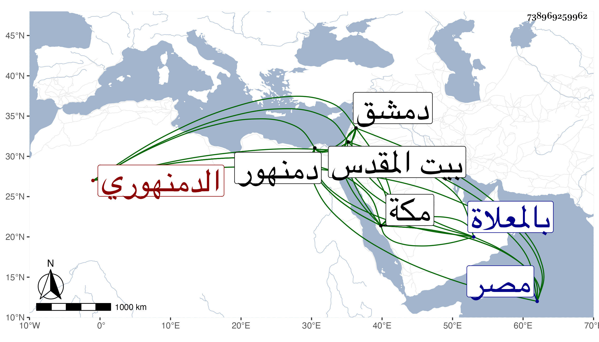

0902Sakhawi.DawLamic.ITO20230111-ara1.EIS1600.738969259962
Biography ID: 738969259962
أحمد بن أحمد بن عثمان شهاب الدين أبو العباس الدمنهوري ويعرف بابن كمال . ولد بدمنهور الوحش وقرأ القرآن في صغره على بعض قرائها وأجاز له وجلس مع الشهود بمصر وصحب قاضي بلده الزين الأنصاري فاختص به وتردد معه وقبله وبعده إلى مكة مرارا وجاور بها عدة سنين وكذا تردد إلى القدس ودمشق واجتمع بكثير من الصالحين وأهل الخير وخدمهم وأحسن لبعضهم كثيرا وعادت عليه بركتهم سما مع إكثاره الصلاة على النبي صلى الله عليه وسلم حتى كان يقول أنه يصلي عليه في اليوم والليلة مائة ألف مرة أو نحوها بل كان يسبح الله ويهلله ويمدح في آخر الليل بمنارة باب العمرة أوقاتا كثيرة في سنين متعددة ثم امتنع من ذلك رغما عن أنفه لأمر اقتضاه وربما كان يذاكر أبياتا حسنة من الشعر والأذكار كل ذلك مع حدة في خلقه تفضي به إلى ما لا يحمد . مات بعد أن تزوج عند بيت الزمزمي وولد له عدة أولاد في ليلة السبت العشرين من المحرم سنة أربع وعشرين ودفن بالمعلاة وقد جاز السبعين بيسير وخلف طفلا رحمه الله وإيانا . ترجمه التقي الفاسي في تاريخ مكة وتبعه ابن فهد في معجمه وشيخنا في أنبائه .
